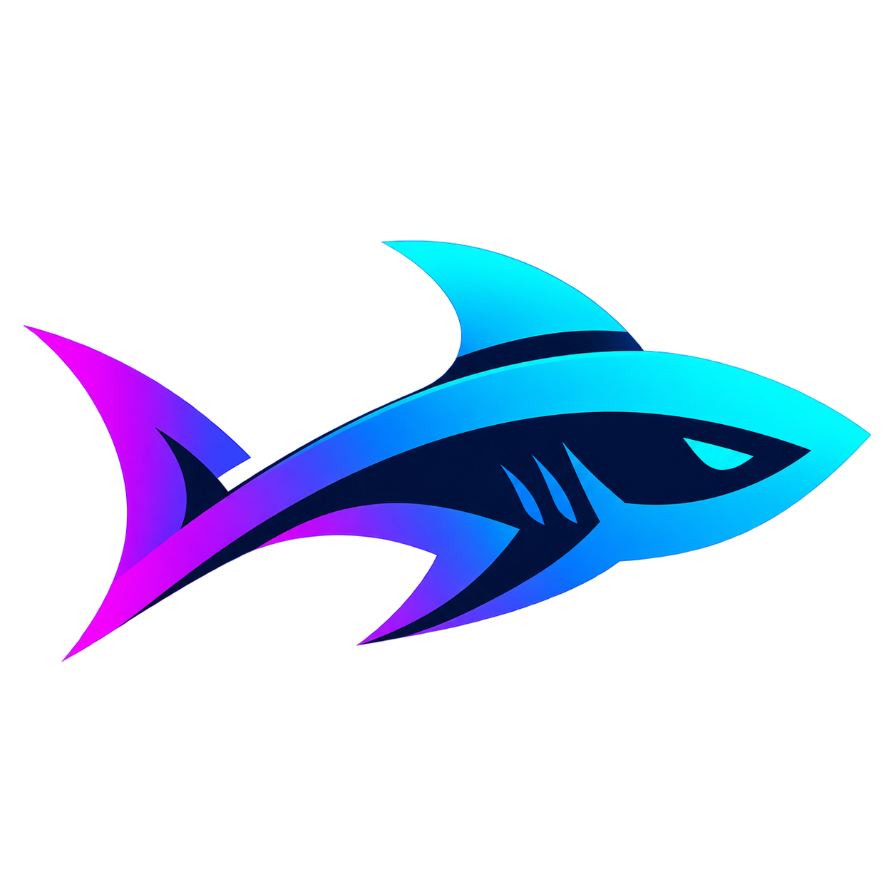

Cargando…
SharkTracker
Últimas 10 Partidas
Ranking Global (SoloQ)
Todos los Elos
#
Jugador
Estado
Rol (10p)
Rango
Winrate
Historial Individual
Haz clic en la fila de un jugador para ver su historial reciente.
Destacados de la Semana
Historial de Logros
Cuenta Regresiva